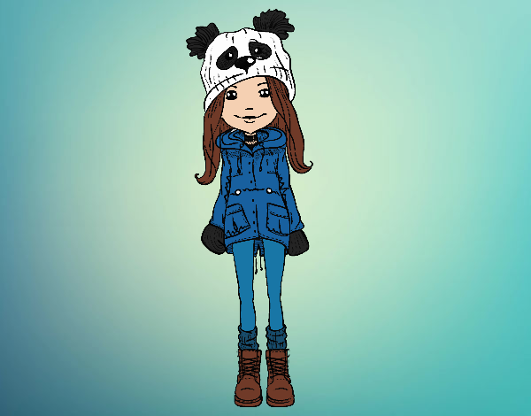
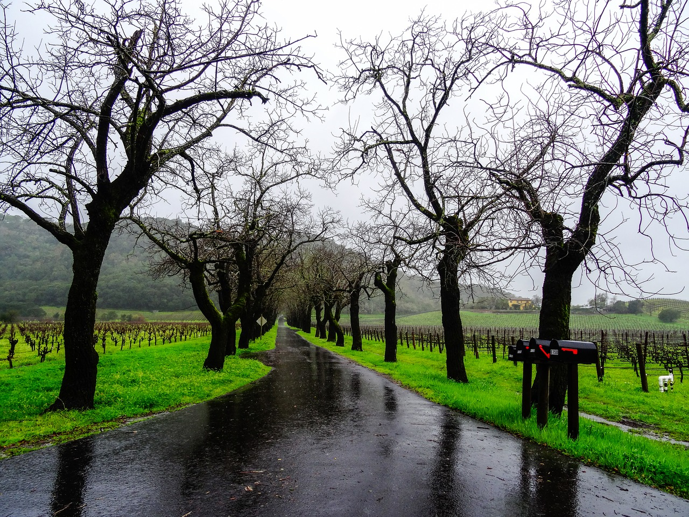
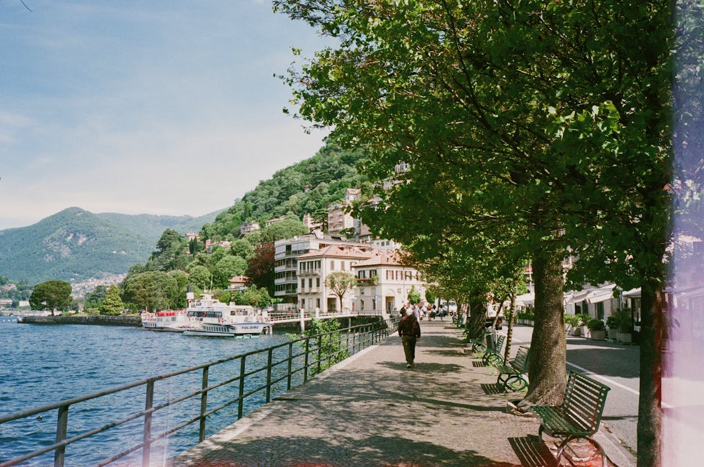

Imagens e favicons
As imagens não são exatamente inseridas na página Web, elas são vinculadas às páginas. A tag <img> cria um espaço reservado para a imagem vinculada.
Os atributos src= e alt= são obrigatórios no elemento <img>. "src" recebe o link, absoluto ou relativo, para a imagem (o local da imagem), "alt" recebe o texto que aparecerá na tela caso a imagem não seja carregada por qualquer motivo e é usado por leitores de tela.
Imagem Bike Flesh

Imagem Decorative Lunch

Imagem Decorative Lunch com link quebrado

Os atributos width e height definem, respectivamente, a largura e a altura da imagem a ser exibida. Ao definir width=100%, a imagem se torna responsiva de acordo com o dispositivo, e se adéqua ao tamanho da tela em que a imagem é exibida.
Os atributos width, height e style="width:XXpx;height:XXpx" são todos válidos, porém recomenda-se usar style para que folhas de estilo CSS e a tag <style> de <head> não alterem o tamanho das imagens.
Imagem Goat Tip com os atributos width 500px e height 130px, sem style e com link para a página Links e âncoras

Imagem Goat Tip com os atributos width 500px e height 130px, com style e link absoluto
Também é possível vincular um URL absoluto no atributo src, como um link para um site externo (ex. "https://mechguru.com/wp-content/uploads/2014/11/Thick-Cylinder-Typical-Radial-and-Circumferential-Forces.png"). Sempre verificar o status de copyright de uma imagem externa antes de usá-la.
Exemplo de imagem com URL absoluto

Também é possível usar GIFs como imagens, localmente ou com URL absoluto.
GIF com URL absoluto

GIFs com URLs relativos


Mapa de imagem
A tag HTML <map> define um mapa de imagem, que é uma imagem com áreas clicáveis. Essas áreas são definidas com uma ou mais tags <area>.
Clique no canto superior esquerdo da imagem:

Como funciona o <map>?
Um mapa de imagem possibilita realizar diferentes ações dependendo da área clicada na imagem. Para criá-lo são necessários uma imagem e o código HTML que descreve as áreas clicáveis.
Insira a imagem com a tag <img>, usando o atributo usemap. O valor de usemap recebe uma hash tag (#) seguida do nome do mapa de imagem, e é usado como um link de âncora, para criar um relacionamento entre a imagem e o mapa.
Em seguida, adiciona-se o elemento <map>, que é usado para criar um mapa da imagem e é vinculado à imagem com o atributo chamado usemap.
Depois, adiciona-se as áreas clicáveis com o elemento <area>. area:c define um círculo, area:d define o padrão, toda a região da imagem, area:p define uma região poligonal e area:r define um retângulo; essas opções também podem ser adicionadas com o atributo shape="rect" (ou circle, poly, default).
As coordenadas (atributo coords="") de rect vêm em pares, p.ex. 34, 44, 270, 350 significa que o retângulo começa a 34 pixels da margem esquerda da imagem e a 44 pixels da margem superior, termina em 270 pixels da margem esquerda e a 350 pixels da margem superior. O último atributo é href= que vincula a um URL.
circle precisa das coordenadas do centro do círculo e do raio, p.ex. 337, 300, 44.
poly precisa de vários pontos de coordenadas, formando um polígono. Para cada ponto da área clicável da imagem, é necessário descobrir o X e o Y. Ex.:
Uma área clicável também pode acionar uma função JavaScript. Adiciona-se um evento click ao elemento <area> para executar a função.
Imagens de fundo
Qualquer elemento HTML pode ter uma imagem de fundo. Para fazer isso, use o atributo style com a propriedade background-image ou no elemento <style> da seção <head> da página. Se toda a página deve ter uma imagem de fundo, especifique-a no elemento <body>.
Para evitar que a imagem não se repita por ser menor que a altura ou a largura da página, usar background-repeat: no-repeat no elemento <style> da seção <head> ou no CSS. NÃO ESQUEÇA O PONTO-E-VÍRGULA NO FINAL!
Para que a imagem de fundo cubra todo o elemento (página, div, caixa, etc.), definir background-size: cover no elemento <style> da seção <head> ou no CSS. NÃO ESQUEÇA O PONTO-E-VÍRGULA NO FINAL!
E para garantir que o elemento inteiro sempre esteja coberto, usar background-attachment: fixed no elemento <style> da seção <head> ou no CSS. NÃO ESQUEÇA O PONTO-E-VÍRGULA NO FINAL!
background-size: 100% 100% estica a imagem e se adéqua ao redimensionamento da janela.
Elemento <div> com imagem de fundo, background-attachment: local e background-size: cover
Elemento <div> com imagem de fundo, background-attachment: fixed e background-size: cover
Elemento <picture>
O elemento HTML <picture> fornece mais flexibilidade ao especificar recursos de imagem. Ele contém um ou mais elementos <source>, cada um específico a diferentes imagens no atributo srcset. Assim, o navegador pode escolher a imagem que melhor se ajusta à visualização atual e/ou ao dispositivo. Cada elemento <source> recebe um atributo media que define quando a imagem é mais adequada.
Com este elemento, o navegador procura pelo primeiro elemento source em que há correspondência do tamanho da mídia em relação à largura do dispositivo atual, e busca a imagem especificada no atributo srcset. O elemento img é OBRIGATÓRIO como a última tag do bloco de declaração da imagem, e é usado para fornecer retrocompatibilidade para navegadores que não oferecem suporte ao elemento picture, ou se nenhuma das tags source corresponder.
Redimensione a janela para ver esta imagem mudar:

Quando usar o elemento picture?
- Se o dispositivo apresenta uma tela pequena, não é necessário carregar um arquivo de imagem grande. O navegador usará o primeiro elemento
<source>que corresponder aos valores do atributo, e ignorará os elementos seguintes. - Alguns navegadores ou dispositivos podem não oferecer suporte a todos os formatos de imagem. Usando o elemento
<picture>é possível adicionar imagens para todos os formatos e o navegador usará o primeiro formato que reconhecer, ignorando os restantes.
Imagem com o atributo float de style
O atributo CSS float coloca a imagem "flutuando" ao lado do texto, à esquerda (float: left) ou à direita (float: right).

Favicon
Um favicon é uma imagem pequena, portanto deve ser simples e ter alto contraste.
Para usá-lo, adicione um elemento <link> à página index.html após o elemento <title> ou coloque o favicon na raiz do projeto, junto com o arquivo index.html.
Tutorial em vídeo sobre Imagens
Estilizar imagens usando CSS
Algumas propriedades do CSS que ajudam a estilizar imagens:
border-radius
border
Para saber mais, clique aqui.
Imagem responsiva
Adicionando max-width: 100%; e height: auto; ao código CSS, a imagem reduz quando a tela for menor que sua altura, mas nunca fica maior do que sua largura máxima.
Estilo polaroid
Decorative Lunch
Goat Tip
Opacidade

Texto

Filtros
A propriedade filter oferece vários filtros para alterar imagens:
grayscale
blur
brightness
contrast
hue-rotate
invert
opacity
saturate
sepia
drop-shadow
Sobreposição (overlay)
Exemplos de sobreposição ao passar o mouse:
object-fit
Esta propriedade define como uma imagem ou um video deve ser redimensionado para adequar-se ao contêiner pai. Ela aceita os seguintes valores:
fill: valor padrão. A imagem redimensiona para preencher todas as dimensões. Se necessário, ela será esticada ou reduzida para caber.contain: a imagem mantém a razão de aspecto, mas redimensiona para se adequar às dimensões fornecidas.cover: a imagem mantém sua razão de aspecto e preenche as dimensões fornecidas, isso pode ocasionar em um corte da imagem.none: a imagem não redimensiona.scale-down: a imagem é reduzida para seu menor tamanho:noneoucontain.
object-position
Esta propriedade define como uma imagem ou um video deve ser posicionado para adequar-se ao contêiner pai, usando as coordenadas X e Y em porcentagens. Ela é ideal para ser usada com a propriedade object-fit, já que possibilita definir qual parte da imagem deve aparecer na área redimensionada.
Máscaras
É possível criar uma camada de máscara a ser posicionada sobre um elemento para ocultar parcial ou completamente o conteúdo do elemento. Para tanto, use a propriedade mask-image.
A imagem da camada de máscara pode ser uma imagem PNG, uma imagem SVG, um gradiente de CSS ou um elemento <mask> SVG.
Para usar uma imagem PNG ou SVG como a camada de máscara, use o valor url() para definir a imagem. Essa imagem precisa ter uma área transparente ou semi-transparente. Por exemplo:
 <img class="mask-5terre" src="../../img/img_5terre.jpg" alt="W3 Logo with Cinque Terre background using mask-image layer">
<img class="mask-5terre" src="../../img/img_5terre.jpg" alt="W3 Logo with Cinque Terre background using mask-image layer">
Observação: usamos as propriedades -webkit-mask-image e -webkit-mask-repeat para fornecer compatibilidade com navegadores que ainda não suportam mask-image. A propriedade mask-repeat impede a repetição de uma máscara menor.
É possível, ainda, usar um gradiente e mascarar o texto:
Siena is a city in Tuscany, Italy. It is the capital of the province of Siena. Siena is the 12th largest city in the region by number of inhabitants.
The city is historically linked to commercial and banking activities, having been a major banking center until the 13th and 14th centuries. Siena is also home to the oldest bank in the world, the Monte dei Paschi bank, which has been operating continuously since 1472 (552 years ago). Several significant Renaissance painters were born and worked in Siena, among them Duccio, Ambrogio Lorenzetti, Simone Martini and Sassetta, and influenced the course of Italian and European art. The University of Siena, originally called Studium Senese, was founded in 1240, making it one of the oldest universities in continuous operation in the world.
Siena was one of the most important cities in medieval Europe, and its historic centre is a UNESCO World Heritage Site, which contains several buildings from the 13th and 14th centuries. The city is famous for its cuisine, art, museums, medieval cityscape and the Palio, a horse race held twice a year in Piazza del Campo.
Com um gradiente radial:


Note que essas máscaras podem ser feitas também com texto usando a propriedade background-clip: text. Outros exemplos do uso de máscaras: 1, 2, 3, 4 e 5.